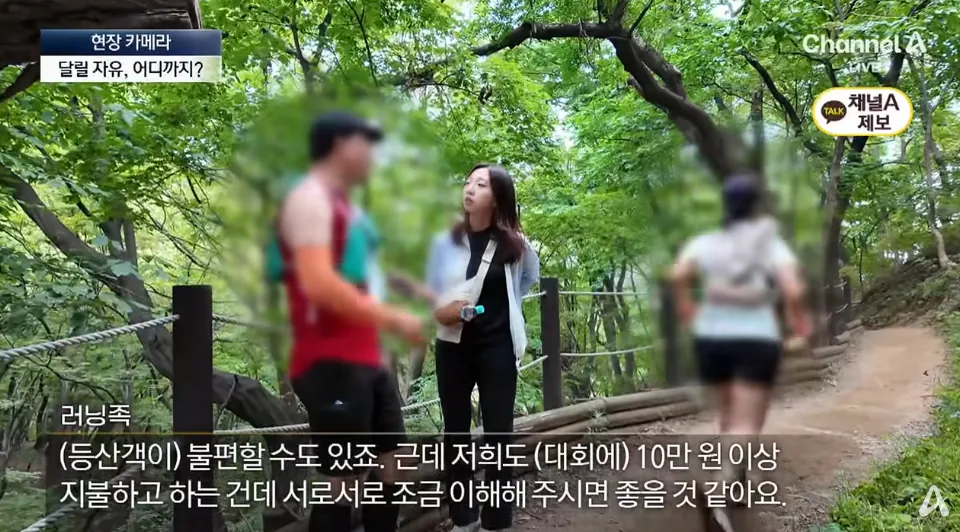
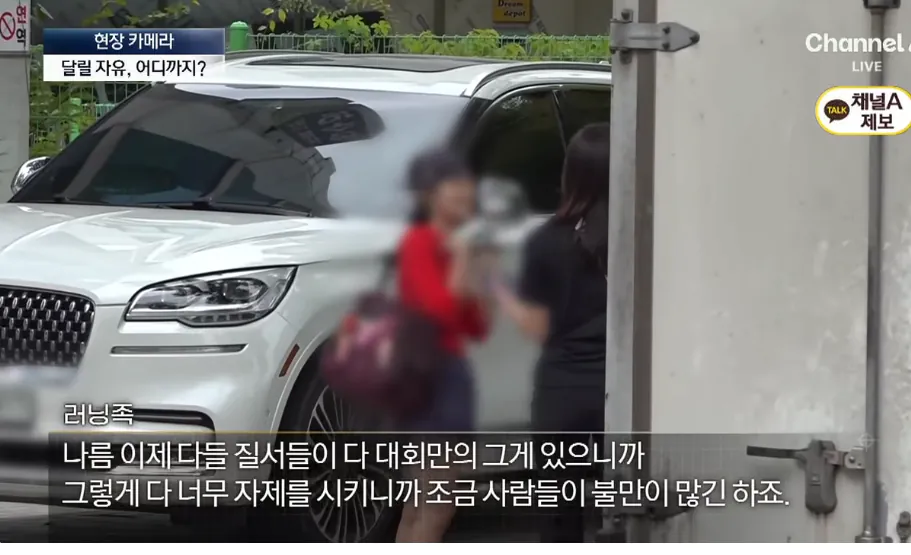
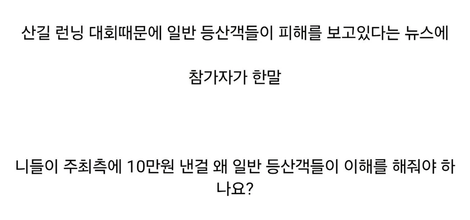

ㅂㅅ같은개쌉소리하고 있네
팩트: 주최가 잘했어야함
뜀박질 대회 좀 그만 쳐열어라 씨발
참가자야 돈 내고 주최측이 통제랑 안내 잘 했을 거라 생각했을테니 저렇게 말할 수도 있지 싶음. 주최가 개새끼
ㄹㅇ 누가봐도 주최측 문제인데 인터뷰 따는게 냄새좀 남
피해주지말고 인간 발전소 어디에 세워서 대회 열자
실제사례
브라질 미나스제라이스 주,
산타 리타 교도소는 죄수들에게 인력 발전을 시켜서 전기를 지역 사회에 공급하고 있다.
자전거가 총 4대 배치되어 있으며, 8명의 죄수들이 하루 종일 번갈아가면서 사용하는 것으로 알려져 있다.
원하는 죄수들이 이 노역에 동원될 수 있고, 죄수들은 발전시간 16시간 당 1일의 감형을 받는다.
https://mbiz.heraldcorp.com/article/10255253
아 근데 트레일러너 옹호목적은 아닌데
등산객이건, 트레일 러너건 간에 둘다 결국 레저용으로 산길을 이용하는 거잖아
그러면 트레일러너가 뛰어서 등산객에게 방해된다! 라고 할 수 있는데 반대로
등산객들 때문에 트레일러너에게 방해된다! 라고도 할 수 있는거 아니야?
어차피 둘다 레저용으로 이용하는거면 둘다 뭐 우선권이 있는것도 아니잖아
결국 러닝이란게 뜀박질인데 그 뜀박질이란 행동이 좋은것도/나쁜것도 딱히 아니잖음... 가치 판단의 영역이 아닐뿐더러
그렇다고 레저용이 아니라 생존용...뭐 업무용이 되었든간에 심마니나 그런 사람은 산길 업무용으로 쓸텐데
아무튼 그게 우선인가? 하면 또 아닌것같은게
달리 말하면 자기 돈벌려고 산을 이용하면서 레저용으로 쓰는 다른 사람들에 비해 우선권이 있는건가?
한국에서는 '밥벌어먹고 살려면 어쩔수 없었다'란 논리가 있지만 그 논리로 도로교통법 위반, 과적 하는 버스,택시,화물차 등 운수업 종사자들이 법을 어기면 우리는 요즘 더 욕하잖아. 밥벌어먹고살면 규칙을 더 잘지켜야하는거 아니냐고...하는 식으로.
우선권이 없는데 우선권이 있는거처럼하는게 지금 러닝이잖아
댕댕런 취재때도 그렇지만 달리는 사람들이 길막는다고 짜증내고 비키라고 말하는거때문에 러닝인식이 쳐박히고 있는거라고 봄
인도로 안다니고 왜 차도로 내려오냐는것도 인도 정비상태때문에 차도로 내려온다는 러너들도 봤고
상황에 따라서 러닝을 멈추고 걸어야 될수도 있다는 생각은 없고 페이스 조절과 지속적인 러닝이 최우선인 사람들때문에 갈등이 발생하는거지
개소리에 에너지 낭비하지 마
이게 무슨 애미디진 씹소리임?
유준엽이는 사회적지능이 떨어지는구나 너같은애들이 저런 뉴스에 나오고 그런단다
넌 길가다 누가 너 밀치고 가도 꼭 사과하면서 살아라 ㅋㅋㅋㅋ
지금 사람 많은데서 러닝 뛰는 새끼들 마인드가 밀치고 왜 거기 서있냐고 욕하는 새끼들이구만
어찌됐건간에 요점은 타인의 자유 제한이 합리적이냐가 중요한거같음
소방차가 신호위반 과속해도 납득이 되잖아? 내가 잠깐 멈춰선다고해도 우선해아한다는 인지가 깔려있으니까
근데 순수하게 개인의 취미를위해서 타인의 자유를 제한하는건 문제가있지
어느곳에서나 매너는 존재하고 등산도 마찬가지지
시발 이건 무슨 신박한 개소리지?
당연히 공공이 이용하는 길에서는 서로에게 폐가 되지 않는 선에서 목적에 맞게 이용할 권리가 있음.
문제는 등산은 걷는것만으로 상대를 다치게 하거나 사고를 낼 가능성이 극히 적지만 단체가 최선을 다해 뜀박질 하는 달리기는 그렇지 않다는 거지.
길은 이동을 위해 공공이 이용하도록 설계된 곳이지 경기나 경쟁을 위한 곳이 아니다. 경기를 하는 사람들은 그 인프라를 잠시 빌리는것 뿐이고.
뭐가 우선인지 파악이 안돼 병신아?
금연구역 지정안된 인도에서 길빵하는 사람들, 본인집 베란다에서 담배피는사람들도 비슷한 이야길 하더라
저런 애가 하나하나 법으로 만들고 이거하지마라 저거하지마라 해야 할듯
그래 다 같이 쓰는 공간이니까
너는 누가 단체로 뛰어가면서 너보고 길막지말고 꺼지라고 쌍욕 갈겨도
아 내가 잘못했구나 생각하고 도로에서 냉큼 꺼져주렴.
돈은 정직하게 벌자 준엽아
어깨빵 당하시면 사과하세요 앞으로 ㅋㅋㅋㅋ
러닝대회는 아무리봐도 봉이김선달 수준의 장사같다
따지고보면 주최측을 까야하는거긴 함
참가한 사람들은 돈 냈으면 그만큼 대우를 받아야 하는것도 맞는 소리라
참여하는 새끼들도 까야지 ㅋㅋㅋㅋ
그지랄하라고 애미애비가 가르쳤냐고 ㅋㅋㅋㅋ
부끄러운줄 알면 저런 마이너 사설업체 경기는 신청도 안함
10만원 냈다고 무관한 사람들이 피해볼 필요는 없지
저 남자가 주최측을 대변하는 뻘소리를 한거임
돈받고 개최한 주최측이 감수해야할 문제
주최측에서 입구에서 일반 등산객한테 뭐라도 뿌리면 몰라
소금뿌릴새끼들인데
마인드가 흡연충이랑 다를게 없네 ㅋㅋㅋ
대회가 돈이 존나 되나봐 개나소나 하던데
"연이은 사고에… 전국 국립공원, 산악 마라톤 허용 구간 지정하기로
사망 사고, 자연 훼손 등 잇따르자 24개 공원별 뛸 수 있는 구역 제한"
https://www.chosun.com/national/transport-environment/2026/06/16/7XBWZ5I6ONC4NJF5MNX6TBFKHM/
`국립공원에서 신고·허가 없이 열리는 산악 마라톤 대회가 늘고 있다. 출입금지나 야간 산행 등 위법 행위가 아니면 막을 근거가 없어, 무등산국립공원은 대회 안내 현수막을 보고서야 개최 사실을 알았다. 환경 훼손과 탐방객 불편 민원도 커지자, 북한산국립공원은 전국 국립공원 최초로 2026~2030년 산악 마라톤 대회 금지를 발표했다.`
...
계속 저렇게 피해주고 깽판치다가, 사고 나면 규제 사항 생기겠지. 어차피 저런 수준 애들은 또 다른데 가서 메뚜기 떼처럼 그 분야도 황폐화 시킬거고.
가이 집 앞에서 락페 열리고 락페 참가한 사람이 똑같은 소리 해도 오케이면 인정이다ㅋㅋㅋ
페벌이 집에서 10분거리라고요?
슬램, 모싱, 월오브데스 다 뒤졌다
왜 돈받은 사람은 가만히 있는거
자라니 시즌2
럭키 흡연충
일반 도로도 아니고 산길 뛰는거면 왜 돈내고 참가하는거지?
그런데 산길 런닝은 무릎 무리 많이 갈거 같은데
저런거 주최 하는데는 뭐 지자체나 산림청에 사용료 내고 하는거임?
시발 나도 주말은 10시 출근인데 길 쳐 막는다해서 지금 나왔다 니미
이런 문제를 안 겪으려고 10만원을 내놨으니 저럴만하지. 주최측이 씹새임.
저건 주최 문제더만ㅋㅋㅋㅋㅋ
사진 찍으러 자리잡는척 하면서 어깨빵 치고 싶네 ㅋㅋㅋ